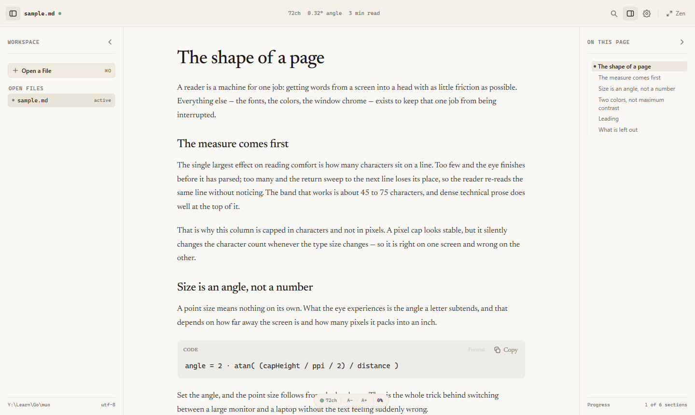
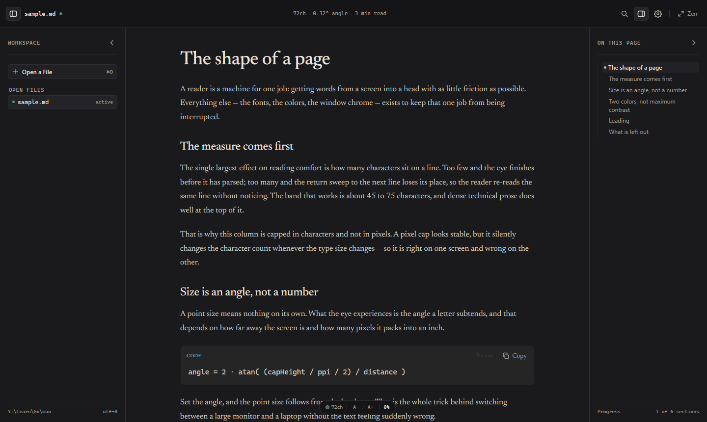
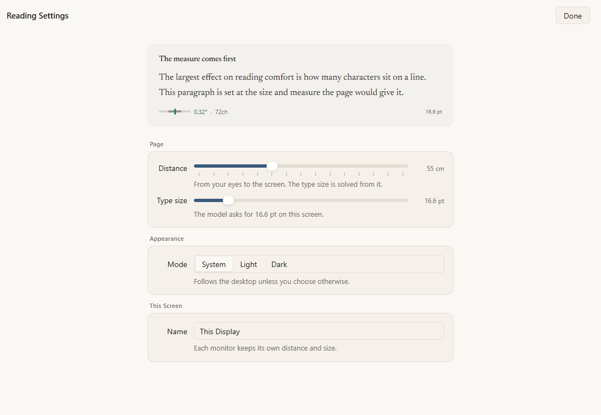

Your eyes stop doing arithmetic
The size is solved from the angle a letter covers at your distance, not guessed from a preference screen.
Markdown reader for macOS and Windows
Muo solves the type size from your screen's density and how far you sit from it, then holds every line at 72 characters. Change the size and the measure stays put.
6,686 lines of Go 114 tests 1 dependency Free, MIT licensed

Change the size of the type and the line stays the same length. The measure is the promise.
Cap a column at 640 pixels and it holds on the screen you designed it for. Change the type size, or open the file on a laptop, and the character count moves with it. The reader re-reads lines without noticing, and blames the writing.
The largest effect on reading comfort is how many characters sit on a line. Too few and the eye finishes before it has parsed the sentence. Too many and the return sweep to the next line loses its place, so you re-read the same line without noticing.
Drag the slider. The gauge shows the apparent height of a capital letter, which is what the eye actually reads. Between 0.26 and 0.38 degrees is the comfortable band.
Four things, all of them consequences of the same decision.
The size is solved from the angle a letter covers at your distance, not guessed from a preference screen.
The column is capped in characters, so raising the type size widens the page instead of shortening the line.
Files on the left, the page in the middle, the outline on the right. Every divider drags, every pane remembers.
Every match is marked on the page, headings included. Enter walks them. In a PDF it turns to the right page.
One readout, always visible: the apparent size and whether it landed in the band. It is the only number the window shows.
Your place in each document, the width of each pane, which panes you folded, and the files you had open.
There is no calibration screen to get through before you can read.
Markdown, PDF or plain text. Drop it on the window or pick it from the library pane.
Density from the display, distance from a sensible default for its size class. Both are editable in settings.
The column is already 72 characters. Nudge the size if you want; the measure will not move.
Warm paper and warm ink in light, warm charcoal and warm grey in dark. Never pure black on pure white, which blooms at the edges of letters.


Including the one about PDFs, which is the honest one.
Markdown, PDF and plain text. Markdown includes GitHub's extensions: tables, task lists, strikethrough and footnotes.
Not yet. Muo has its own PDF interpreter rather than a browser engine, and it draws text runs as solid bars instead of glyphs. The page layout, the images and the page counter are right; the words are not readable.
Search does work on PDFs, because the interpreter reads the text even when it cannot draw it. It turns to the page the match is on. Faithful rendering needs the embedded font programs interpreted, which is a larger job than the rest of the app.
The eye finishes a line and returns to the next one by moving a fixed number of characters. Fix that number and the sweep stays reliable. Fix the pixels and the number moves whenever the type size does.
The apparent height of a capital letter, in degrees, followed by the character count. Below 0.26 degrees the eye leans in. Above 0.38 the return sweep gets unreliable. The marker's colour says which side of the band you are on.
Yes, with the slider in settings or Cmd plus and minus. The model is a starting point, not a lock. Following the model again is one button away.
Yes. Each release carries a signed macOS disk image, two Windows installers, and Debian packages plus tarballs for Linux on both x64 and arm64. Every platform is built from the same tag by the same workflow.
No. The whole idea depends on knowing the screen's density and the distance to it, and a phone held at 30 cm changes both every time you move. That is a different design problem.
No account, no sync, no telemetry. It reads files from disk and writes two small JSON files to your user data folder. The only network access is the update check, and only when you ask for it.
Go and MyGo, which draws the interface on the GPU. No webview, no JavaScript runtime, no frontend build. One dependency in go.mod.
Yes, MIT licensed. The source is on GitHub and you can build it yourself in one command.
Per user, no administrator prompt, about 11 MB. Uninstalling removes everything it added and leaves your reading positions alone.
Windows 10 and 11, x64 and arm64 macOS 12 and later Debian and Ubuntu, x64 and arm64